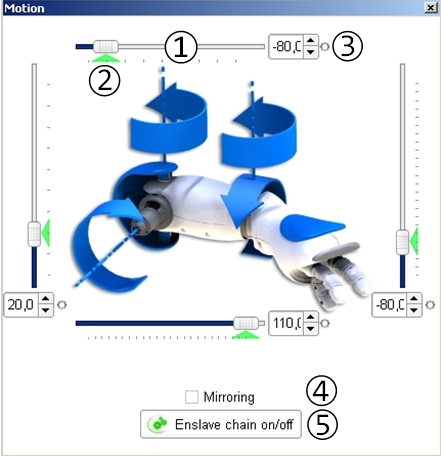

Robot view¶
What is the Robot view¶
It is updated as soon as you move a joint:
- playing a behavior,
- moving a joint manually (on a real robot) or
- moving a joint through the Motion widget.
Limitations: The torso of the robot is static. It is the reference of this 3D view. The limbs and the head of the robot moves around the torso which does not move. So even if your real robot falls over, you will not see it lied down in the 3D view. You will only see the relative position of its joints.
Selecting a different simulated robot¶
If you are connected to a Simulated robot, you can change the model and the hardware version of the robot:
Moving joints using the Motion widget¶
To move joints using the Motion widget:
| Step | Action |
|---|---|
In the Robot view, click any moving part of the robot (head or limbs). The Motion widget appears. |
|
If Choregraphe is connected to a real robot, then make sure the joint is stiffened. If not, click the Enslave chain on/of button. |
|
| Use one of the Sliders to adjust the joint value. |
See also the examples of use of the Motion widget:
Motion widget¶
The Motion widget enables you to modify the joint values of each limb.
The table below describes in details the control buttons and indicators of the Motion widget:
| Item | Description |
|---|---|
| (1) Slider | Adjust the joint value. You can move it, as well as enter a value in the associated text box. It sends a command to change the value of the joint. The robot will then try to reach the command value with its joint as soon as possible. Note On a real robot, this slider has no effect as long as the concerned joint is not stiffened. You must first set the stiffness on using the Enslave chain on/off button to be able to change the joint value. |
(2) or |
Shows the Current joint value.
|
(3) Record button |
Saves the defined value. This button can be:
For an example of use of this button, see the Create a movement on a real NAO. |
| (4) Mirroring option | Execute the same actions (send a command value, register a joint value, etc) on the symmetric limb as a mirror. For example left and right arms will move the same way. |
(5) Enslave chain on/off button 

|
Sets on/off the stiffness of the whole selected chain of joints. For example if you select the right arm and click on this button, all the joints of the right arm will be stiffened on or off. This button can be:
|